What can go wrong - new tasks arrive, resources fail (e.g. instruments offline),
Motivation - localize changes, make them small, continuity of global plan, reactive repair must be fast.
Approaches - contingency - build multiple futures, execution branches to cope with what might happen.
Different approaches [Policella et al., 2003] classifies these as:-
Examples (Muscettola+Smith /HSTS, Sadeh/MICROBOSS), (Bresina et al/JIC), SPIKE others.
[Davenport et al., 2001] compare 3 pro-active techniques for building extra time into a schedule to cope with uncertain duration. Temporal protection adds a slack time into each activity duration prior to the search, time slack window uses reasoning during the search to attach minimum slack into each activity, focused time window slack (FTWS) assigns slack based on the distance along the planning horizon. Normal distributions are used to model the likelihood (MTBF)
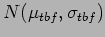 and length (downtime)
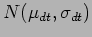 of breakdowns:-
| 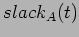 | 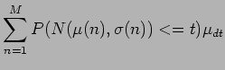 | (1) | |
| 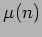 | 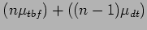 | (2) | |
| 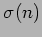 | 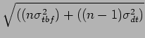 | (3) |
Two different approaches are compared by [Policella et al., 2003] (WHAT CONTEXT) and described in more detail [Policella, 2005]
They define 3 measures of robustness -
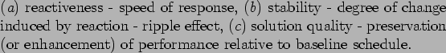
. Two metrics are defined for evaluating schedule quality:-
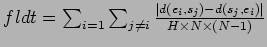
where 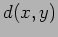 is the distance between 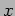 and and 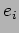 is the finish time for activity and is its start time. This metric is designed to evaluate the fluidity of the schedule i.e. its ability to absorb time variations. Small values of 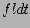 imply that effects will be localized rather than ripple through the schedule. The second metric:-
where 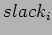 is the slack available to activity and 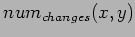 is the number of activities moved from their start times when activity is delayed by with 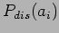 estimated as 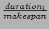 discribes disruptibility of the schedule and they claim it measures the price to pay for the flexibility of the schedule
The first technique resource envelope based employs a 2 step process. In the first step, from an initial partially ordered schedule with constraints they compute the resource-envelope (a time varying measure of resource requirements), using this they then detect conflicts (where more activities require a resource than its capacity allows), a selection heuristic is used to rank and then select a pair of competing activities, a sequencing heuristic then specifies (posts) new precedence constraints to remove this conflict. The resulting modified schedule with new constraints is fed back into the first step until a solution is found. The second technique earliest start time starts with a pre-selected fixed-time schedule, then selecting activities based on ranked order of start times and using a cheaper resource analysis posts new precedence constraints which can be used to determine the bounds for eachactivity to prodcuce a flexible schedule. They find that the second approach perfoms best against all quality measures and is fastest.
In [Muscettola, 1992] Conflict Partition Scheduling (CPS) in context of HSTS - partitioning of bottlenecks uses constraint posting and stochastic simulation to locate areas of search space where solutions are unlikely to be found. MOVEBACK
In [Sadeh, 1991] the /MICROBOSS scheduler - lookahead techniques, aggregate demand profile, ORR and FSS (already mentioned) - ONLY IN INTRO
[Bresina et al., 1994] take a different approach (JIC) to a scheduling problem involving selection of observations for the XXX telescope in which the main source of uncertainty relates to the lengths of observations (action duration uncertainty). Uncertainty is due to star-centring which depends on sky conditions, wind, pointing etc. Uncertainty grows with time. Online scheduling is slow (whole night's observations to allocate to enablement intervals).
They run multiple simulations over the night looking for the most likely break points then look for alternative branches to execute... details also [Drummond et al., 1994].
Hard to explain without diagram..worth reproducing their FIG 1 and adding some notes.
Problem is to create a multiply contingent schedule from a fixed schedule in a reasonable time soas to increase robustness. Large search space if any action can break - need to reduce number of branch points to manageable size.
Improved for Mars rover [Bresina et al., 1999] additional resource uncertainty not just time, expected utility to select branch not just p(fail), allow setup steps prior to branch point.
and note use of HBSS [Bresina, 1996].